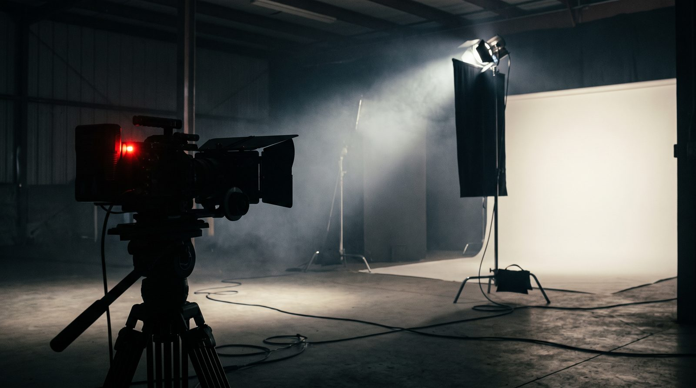
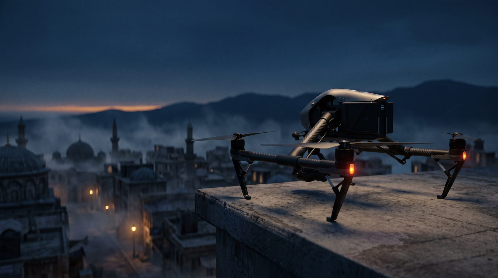

Ana sayfa › Stüdyo
Stüdyo · nasıl çalışıyoruz
İki kişilik bir stüdyoda iş kalabalıkla değil zincirle yürür: set, drone, render, renk, kurgu, yayın. Aşağıda her bölüm gerçekten çalışan bir parçayla gösteriliyor — canlı tel kafes model, öncesi/sonrası renk, siteyi işleten sayaçlar.

Yapay zekâ ile üretilmiş görselBölüm 01
Çekimin dili sette değil, ön görüşmede belirlenir: ne anlatılacak, hangi ışıkla, hangi kamera hareketiyle. Sette bunu tek sert ışık, sis ve siyah bayrakla uygularız — kalabalık değil, karar gerekir.

Yapay zekâ ile üretilmiş görselBölüm 02
Drone bir kamera hareketidir, bir oyuncak değil. Şafak ve mavi saat planlaması, uçuş izni, rüzgâr ve güneş açısı çekimden önce çözülür; sette yalnız uçuş kalır.
Bölüm 03
Yandaki bina bir görsel değil; sayfa açılırken tarayıcının çizdiği bir tel kafes model. İmleci üstünde gezdirince döner. Gerçek işte bu iskelet, malzeme ve ışıkla fotogerçekçi kareye dönüşür.
Bölüm 04
Kaydırıcıyı çek: solda ham kare, sağda masadan çıkan hâli. Kontrast, doygunluk ve kodlama sitenin paletine göre ayarlanır; teslimde her format için ayrı çıktı alınır.
Bölüm 05
Bu klip bir video modelinden değil, doksan satır koddan çıktı: ışık, sis, toz, yazı açılışı, gren. Kurgu, tipografi ve hareketli grafik böyle üretilir; aynı klip dakikalar içinde başka renk, başka yazıyla yeniden çıkar.
Bölüm 06
Yayınlayan da yazılım. Bu siteyi, günlük gündemi, bülteni ve asistanı yazan sistem, sayfaların SEO kapısından geçtiğini de kendisi denetler. Aşağıdaki sayılar dosyadan sayılır, elle yazılmaz.
Sayılar depodaki dosyalardan sayıldı; sayamadığımız hiçbir şey burada yazmıyor.
İşi anlat, hangi bölümlerin gerektiğini birlikte belirleyelim; teklif aynı gün gelsin.